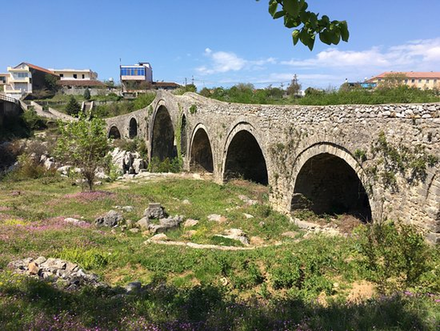
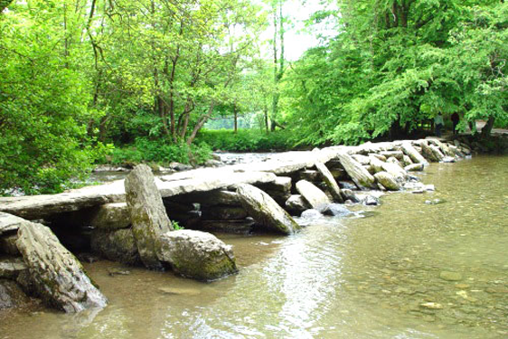

Возведение мостов: взгляд сквозь века
Среди всех конструкций, когда-либо сотворенных человеком, мосты являются одними из самых первых. Они создавались при необходимости переправы через реку и были ценны. Поэтому мосты строили из прочного материала, служившего длительное время. В наши дни легко отследить, как изменялась технология возведения переходов через водоемы, рассматривая примеры от самых древних до современных мостов.
На сегодняшний день старейшим признан греческий Мост Аркадик. Это одна из тех исторически значимых конструкций, которые до сих пор используются по назначению. По мнению историков, здесь пролегала военная дорога, а сам переход через реку построен во время расцвета Элладской цивилизации в 13 веке до нашей эры.
Ширина моста – 2 метра 50 сантиметров, благодаря чему по нему могли не только проходить люди, но и передвигаться колесницы. Он сооружён из известняковых булыжников без каких-либо соединительных составов. Для того, чтобы создать подобную конструкцию, древним строителям требовалось высчитать центр тяжести и расположить все камни относительно этой точки. Благодаря тому, что мост арочный, то вес камней распределяется более равномерно, поэтому они могут держаться и без дополнительных склеивающих веществ.
На опоре – фундаменте, который образуется прямоугольными булыжниками – выстроены 2 несущих столба. Они расширяются так, что их верхние части почти касаются друг друга. На месте их соединения положена груда камней, плотно закрывающих щель между колоннами. Дальнейшие слои накладываются уже на это сооружение. Продуманная конструкция позволила мосту сохраниться практически в идеальном виде.
Более новый мост – Тарр Степс в Англии – представляет собой путь из больших глыб. Плоские плиты расположены на выровненной каменной основе. О дате постройки сказать трудно, так как при постоянном контакте с водой стёрлись какие-либо знаки, которые могли бы подсказать век создания.
О стройке этого перехода сохранилась легенда. Подобные валуны было не под силу принести на это место, поэтому многие считают, что «водный путь» построен самим Дьяволом, который хотел ходить по воде так же, как Иисус. Местные жители, прознавшие о задумке Сатаны, попытались его прогнать, однако у них не удалось этого сделать. Тогда они заключили с Повелителем подземного царства сделку: мостом можно будет пользоваться в любое время. Однако Дьявол может прилечь здесь, чтобы позагорать, тогда любой путник попадёт в его плен. Поэтому нужно быть осторожными и убедиться перед переходом, не притаился ли на мостках Сатана. Большая часть полноводных рек в Древней Руси использовались в качестве торговых путей, поэтому мостами их не перегораживали вплоть до 17 века.
15.03.2019